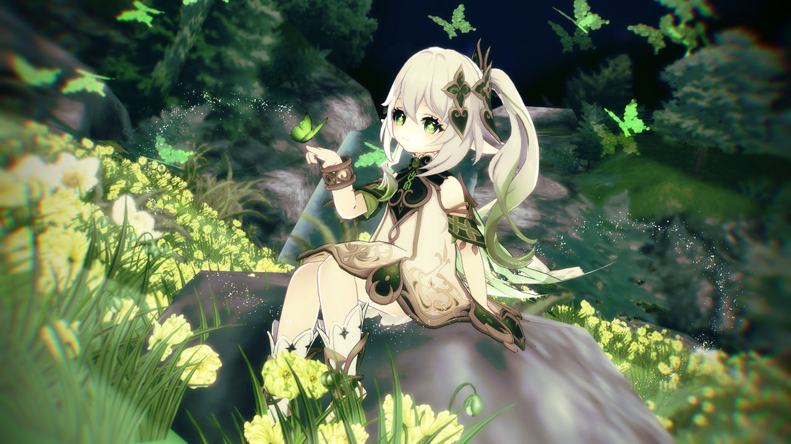

Сумеру – Мудрість у Джунглях
Геймплейні механіки
-
Дендро-реакції: У битвах важливу роль відіграють дендро-реакції, такі як Горіння, Буяння і Прискорення. Ці реакції допомагають створювати різноманітні стратегії для боротьби з ворогами, додаючи елементи природи та рослинності до механік гри.
Горіння, Буяння, Прискорення.
- Розвідка в джунглях та печерах: Сумеру славиться своєю дивовижною природою, де густі джунглі і таємничі печери стали місцями для досліджень та пошуків стародавніх руїн. Гравці можуть досліджувати ці місця, щоб знайти нові ресурси, артефакти та історичні пам'ятки.
- Збір ресурсів: Природні ресурси регіону Сумеру відіграють важливу роль у створенні різноманітних зілля та артефактів. Зокрема, в Сумеру можна знайти рідкісні рослини та матеріали для виготовлення особливих предметів.
Цікаві факти
- Сумеру базується на індійській та перській культурах: Архітектура, мода, та музика в Сумеру натхненні культурами Індії та Персії. Ви зможете помітити характерні орнаменти, барвисті будівлі та інші елементи цих культур.
- Академія Сумеру: Академія Сумеру є одним із найбільших наукових центрів Тейвату, де здобувають знання про природу, магію та філософію. Це місце навчання для тих, хто прагне зрозуміти магічні сили світу, а також для вивчення древніх таємниць, пов'язаних з рослинами та природою.
- Мудрість Нахіди: Нахіда має надзвичайну мудрість і знання про природу, вміння читати природу та її зв’язок із людьми. Вона є символом глибоких знань і просвітлення, а також наставником для тих, хто шукає істину.
- Священні ліси та древні дерева: В Сумеру розташовані священні ліси та великі дерева, які вважаються священними і мають власну історію, що тягнеться до глибокої давнини. Вони є важливими культурними і природними об’єктами для місцевих жителів.
Дендро Архонт – Нахіда
Нахіда, також відома як Маленький Лорд Кусаналі, є Дендро Архонтом. Вона замінила попереднього Архонта Рукхадевату і, незважаючи на свою молоду зовнішність, є однією з найбільш мудрих і впливових фігур у Тейваті. Її здібності пов'язані з природою, рослинами та знанням. Нахіда володіє особливими магічними силами, що дозволяють їй маніпулювати рослинним світом і навіть впливати на свідомість інших людей через свої знання.

На головну сторінку